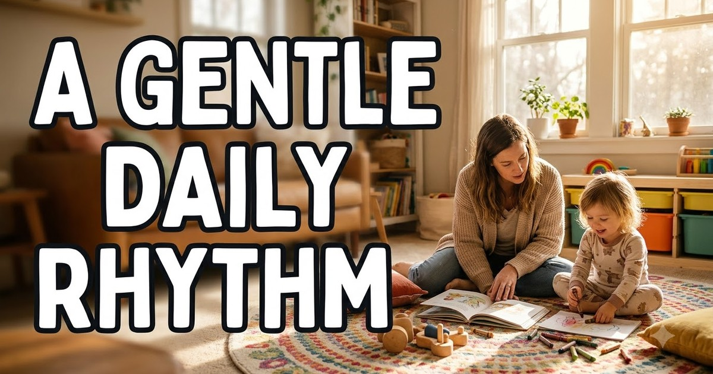

Homeschool Preschool Daily Routine with Printables

Homeschooling a preschooler does not need a strict timetable or a classroom. What most young children need is a simple rhythm they can count on - the same parts of the day, in the same order, with plenty of room to play. Here is a gentle daily routine for ages 2 to 7, and how printables fit into each part of it.
1. Why a rhythm, not a timetable
A routine is not the same as a schedule with clock times. The order of the day stays the same, but the times can shift - breakfast runs late, a walk runs long, a younger sibling needs a nap. Early childhood guidance from the National Association for the Education of Young Children (NAEYC) describes a good daily schedule as predictable yet flexible and responsive to each child's needs. That is the whole idea: the same anchors each day, at whatever pace your family needs.
Routines also give children a feeling of safety. When children know what comes next, they can relax into the day instead of wondering what will happen. The early childhood organization Zero to Three puts it simply: routines provide the two key ingredients for learning - relationships and repetition. A steady rhythm also makes transitions easier, because 'after coloring comes outside time' is easier to accept than a sudden change of plan.
2. Morning circle: a warm welcome
Start the day together, even if it is just the two of you. A short morning circle sets the tone: say good morning, look outside and talk about the weather, sing a song, and pick one thing to look forward to. Keep it short - about 5 to 10 minutes is plenty - and let it be joyful rather than formal. If your child wriggles away after two minutes, that is fine - try again tomorrow.
- A simple weather chart your child can color in each morning.
- A 'today we will' card with three picture boxes to fill in together.
- A song sheet with the words to your morning song, so your child can point along.
3. Letters and words, a little at a time
Pick one letter, one word, or one short rhyme for the day - not a whole lesson. Point out the letter on signs and in books. A letter coloring page gives your child something to do with their hands while the sound and shape sink in. Try one letter a day from My First ABC Book - A is for Apple, B is for Ball - and let your child stop whenever they lose interest. About 10 to 20 minutes is a good length for this part of the day, but a happy five minutes can be just as valuable.
4. Coloring and fine motor time
This is the heart of the day for many families. Coloring gives small hands practice holding a crayon, staying inside a shape, and pressing lightly or firmly - the same control children use later for writing. It also gives your child a quiet, focused activity that needs no screen. Set out crayons and a page, and let your child work at their own pace. Many preschoolers are happy with about 10 to 20 minutes, and it is fine to stop sooner whenever they lose interest. A fresh page from the free printables keeps it new, and finished pages can go on the fridge.
5. Outdoor time and movement
Young children need to move, and outdoor time is part of the rhythm, not a reward for finishing lessons. A walk around the block, time in the garden, or play at the park all count. Early childhood scheduling guidance recommends daily outdoor time and movement, balanced with quieter indoor time. On rainy days, move the energy inside instead - dancing, an obstacle course of cushions, or a game of follow the leader. Our ideas for screen-free activities for kids on rainy days can help when the weather keeps you in.
6. Story time
Read together at least once a day - after lunch is a natural spot, when energy dips. Choose a short picture book, read it slowly, and talk about the pictures as you go. Ask what your child thinks will happen next, or who their favorite character is. Story time is also a gentle way to practice new words: new words land best inside a story your child cares about. If your child wants the same book again tomorrow, that is a good sign - repetition is how young children learn.
7. Free play
Free play is not the gap between lessons - it is one of the most important parts of the day. Blocks, dressing up, pretend cooking, building a den: this is where children practice ideas, try out words, and solve small problems on their own. Early childhood guidance recommends extended periods of uninterrupted, child-chosen play, with adults nearby but not directing it. Give free play a long stretch each day - about 45 to 60 minutes if it fits - and resist the urge to turn it into a lesson.
8. Quiet time
After lunch or after outdoor play, most young children need a slower stretch. Younger children may nap; older ones can look at books, listen to gentle music, or color quietly. Keep it calm and low-pressure - quiet time is rest, not another lesson. A coloring page or a simple puzzle fits here: something your child can do alone, at their own pace, while you get a breather too.
9. A sample rhythm for one day
Here is one way the pieces can fit together. These times are flexible examples only - move them, stretch them, or skip a block entirely. The order matters more than the clock.
- Morning circle - about 5 to 10 minutes: good morning, weather, one song.
- Letters and words - about 10 to 20 minutes: one letter, one rhyme, one coloring page.
- Coloring and fine motor time - about 10 to 20 minutes: crayons, a page, and a quiet table.
- Outdoor time and movement - as long as it suits your day: a walk or the park.
- Lunch, then story time - one short book, read slowly, with time to talk.
- Free play - about 45 to 60 minutes: blocks, dressing up, or whatever your child chooses.
- Quiet time - about 20 to 30 minutes: books, gentle music, or quiet coloring.
10. Tips for days when nothing goes to plan
- Start with the anchor that matters most - usually morning circle or story time - and let the rest go.
- Keep a small box of crayons and printables ready, so an activity is always within reach.
- If your child is tired, hungry, or upset, skip the plan. Comfort comes first; the routine will still be there tomorrow.
- End the day the same way - a story, a song, or a look at what you did together - so tomorrow starts with something familiar.
Try it yourself
Start with our free printables - coloring pages and activities you can print at home, no sign-up needed.
Frequently asked questions
How long should our homeschool preschool day be?
There is no set length. Many families keep the planned parts - circle time, letters, coloring - to short blocks of about 10 to 20 minutes each, with the rest of the day for play, meals, outdoor time, and rest. Let your child stop whenever they lose interest; a short, happy session can be just as valuable as a long one.
What if my child will not sit still for circle time?
Keep it short - about 5 to 10 minutes - and let your child move. They can stand, hold a toy, or join in for just the song. If they wander off, let them go and try again tomorrow. A routine that bends a little is one your child will come back to.
Do I need to follow any rules to homeschool?
Homeschool rules vary by place, so check your own local requirements before you start. The routine in this article is about how the day flows, not about paperwork, so it works the same way whatever your local requirements are.
Sources
- National Association for the Education of Young Children. Developmentally Appropriate Practice: A Position Statement of the National Association for the Education of Young Children - strengths-based, play-based learning, and daily schedules that are predictable yet flexible and responsive to individual needs.
- ZERO TO THREE. Creating Routines for Love and Learning - routines provide the two key ingredients for learning, relationships and repetition; routines help children feel safe, cope with transitions, and practice social skills.
- PBS KIDS for Parents. Back to School - Creating Daily Routines for Kids: consistent routines provide comfort and a sense of safety to young children.
- Pennsylvania State Board of Private Academic Schools. Developmentally Appropriate Scheduling Guidelines and Sample Schedules for Early Childhood Programs - balance of child-initiated and teacher-guided learning, extended uninterrupted play, daily outdoor learning, and short large-group times.